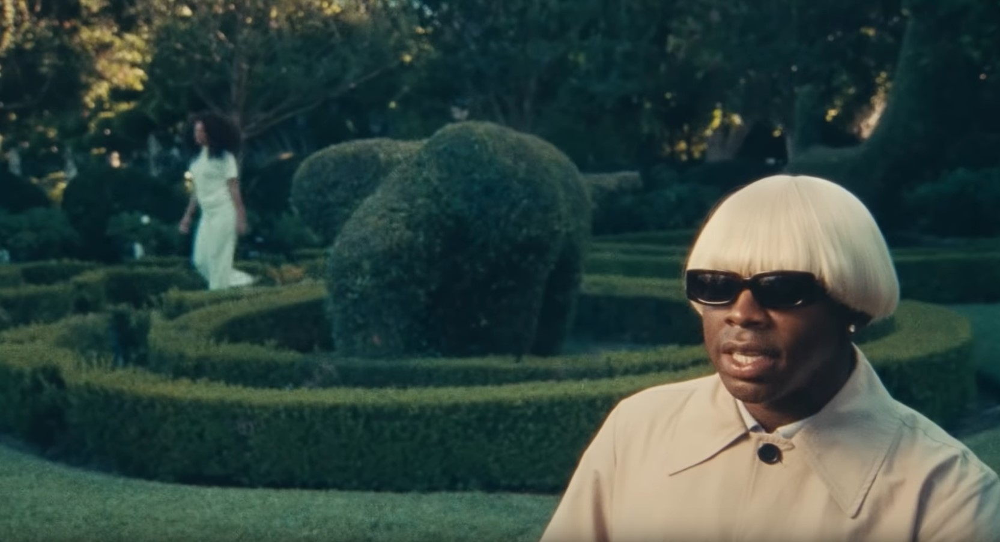

Tyler, the Creator, (real name Tyler Gregory Okonma) is a rapper, songwriter, singer, fashion designer, record producer, and more. He was born on March 6, 1991 in Lader Heights, California. At the age of seven, he would begin to draw covers he had even begun to make music. At 14, he taught himself to play the piano. for his own imaginary albums, even including song titles and song lengths, before His first claim to fame was as a co-founder of an alternative band called Odd Future. This band also included many other popular singer/rappers, such as Earl Sweatshirt, Frank Ocean, and Matt Martians. After being in Odd Future for some time, Tyler decided to try some solo work and released his debut solo album, B*st*rd. Within the next decade, he released five more albums. His most recent album, Igor, was his first to debut at number on on the US Billboard 200.
Tyler has created his own brand, called Golf Wang. Below is the logo of said brand, which is also a link his website.
These are my top five favorite songs of his, as well as which album they are from.
You can listen to all of Tyler's studio albums at the links below. Click on the name of the album to reach its corresponding youtube playlist.
The table below displays when each of Tyler's studio albums were released. For my review on his four most recent albums, click on the album name.
| Album | Release Date |
|---|---|
| B*st*rd | December 25, 2009 |
| Goblin | May 10, 2011 |
| Wolf | April 2, 2013 |
| Cherry Bomb | April 13, 2015 |
| Flower Boy | July 21, 2017 |
| Igor | May 17, 2019 |